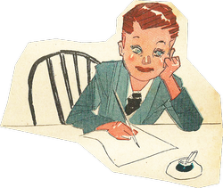

La escuela es nuestro segundo hogar. El aula debe ser el reflejo de aquél. Para aliviar a nuestra madre o por respeto al trabajo de los demás, no arrojamos papeles, maderas de lápices, etc., en los pisos de nuestras casas. ¿Por qué hacerlo en la escuela?
Si te corresponde la suerte de ser monitora, cuida el orden y limpieza de todo lo que te rodea y enseña a tus compañeras a hacer otro tanto.
Pide permiso a tu maestra para arreglar las láminas que estén rotas o manchadas: consigue plantas y ocúpate de ellas todos los días. No hay cosa más triste que una planta seca.
No olvides los días patrios. Si sabes dibujar, elige motivos sencillos; cintas, laureles, escarapelas, ponen una nota hermosa en los pizarrones.
Atiende en clase; el tiempo perdido no se recupera jamás. .
Yo soy feliz porque estudio y obedezco; procura conseguir esta felicidad. ¡Es tan sencillo lograrla!
Lee los consejos que van a continuación destinados a un niño, pero que tú debes y puedes practicar.
PARA QUE RESPONDAS: ¿Cómo puedo embellecer mi clase?
Julia M. Crespo, Camino al llano, Ed. Kapeluz, año 1939. Págs. 9-10
Carta de un niño que estuvo en este grado

Amigo:
Quiero dejarte un poco de lo que recogí, gracias a mi buen maestro, y aliviar así su tarea y la tuya.
No son objetos materiales que se pueden ver o tocar; son ideas que te servirán para marchar adelante si las pones en práctica.
No esperes que te indiquen cómo debes tratar tus útiles; lo sabes porque la conciencia te reprocha cuando los manchas o rompes por descuido. Empéñate al hacer tus deberes; da tanta satisfacción una palabra de elogio, que bien vale la pena ganarla con un poco de trabajo.
Colecciona láminas, que algún día te serán útiles; pero no lo hagas sin antes preparar una carpeta: dos cartones servirán para ello. Las ilustraciones arrugadas o sucias no deben aparecer en tus cuadernos. Sé buen compañero; enseña en los recreos al que no sabe; pero no le hagas los deberes, porque más tarde no tendrá quien trabaje por él y será un inútil.
Pon en práctica todo lo bueno que se te ocurra y trata de vencer al diablillo que llevas dentro cuando te empuje a hacer alguna travesura.
Te desea buena suerte tu amigo que está en tercer grado.
PARA QUE RESPONDAS: ¿Cómo puedo conservar mis útiles?
El lápiz - La pluma - El cuaderno - El libro
Op. Cit. 11-12
Bajar .pdf